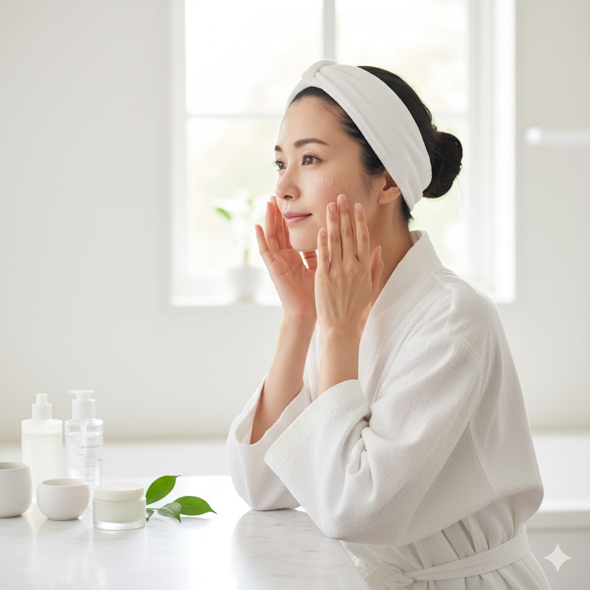

自然のリズムに寄り添うスキンケア
季節が巡るたびに、肌はその変化を敏感に感じ取っています。春には花粉や紫外線、夏には汗と皮脂、秋には乾燥、そして冬には冷気と暖房。どの季節も、肌にとっては小さな試練の連続です。
オーガニックケアは、そんな肌の声を静かに聞き取るような存在です。自然の恵みを活かした植物エキスや精油は、過剰な刺激を与えずに肌を守り、ゆるやかに整えてくれます。香りや手ざわりもまた、心にやさしく寄り添う要素のひとつ。スキンケアを「癒しの時間」として感じる人が増えているのも頷けます。
朝、鏡の前で肌を触れた瞬間に「今日の調子、いいかも」と感じる。そんな小さな喜びが、心を軽やかにしてくれます。オーガニックコスメは、単なる化粧品ではなく、“自分と向き合うためのツール”なのかもしれません。
皮膚科医が語る「肌の自活力」
藤井先生の言葉にもある通り、「与えるケア」より「育てるケア」が今の時代の主流になりつつあります。 毎日のクレンジングや保湿の選び方一つで、肌の未来が変わる。オーガニックアイテムを選ぶということは、 その選択そのものが“肌を信じる”という行為なのかもしれません。
たとえば、オーガニックローションは保湿だけでなく、肌の水分循環をサポートします。 オイルやクリームは外から守るのではなく、内側の潤いを閉じ込めるように働きかけてくれます。 こうした小さな積み重ねが、やがて揺らぎにくい肌をつくり上げていくのです。
🌸 今月の特別おすすめアイテム
年齢肌・乾燥肌の方に特に人気のアイテムをピックアップしました。
気分が上がるケアで、毎日のスキンケア時間をもっと贅沢に。
※ 気になる方は今すぐチェックしてみてくださいね。
自分の肌を愛するということ
「オーガニック」という言葉は、ただの流行ではありません。 それは、肌や地球と“共に生きる”という考え方に近いものです。 肌に何を与えるかだけでなく、どう向き合うか。そこに美しさの本質があるように思います。
朝の洗顔、夜のスキンケア。ほんの数分の時間でも、 自然の香りに包まれて深呼吸をすれば、心も肌も少しずつ柔らかくほぐれていきます。 肌を大切にするということは、自分の生き方を丁寧に扱うことでもあるのです。
オーガニックケアは“足す美容”ではなく、“戻す美容”。 自然に還るように、シンプルに、穏やかに。 肌の声を聞きながら、自分らしい美しさを見つけていく。 そのプロセスこそが、ほんとうの「ビューティー」なのかもしれません。
今日のケアが、明日のあなたを作ります。 自然のちからと、自分を信じる力を味方に、あなたらしい輝きを育てていきましょう。